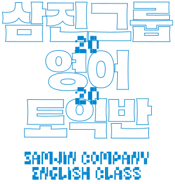
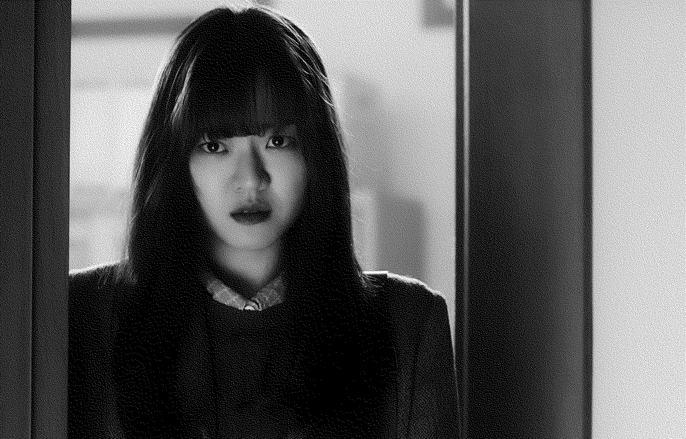
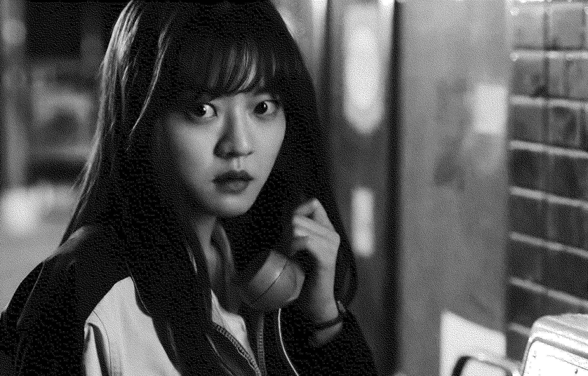
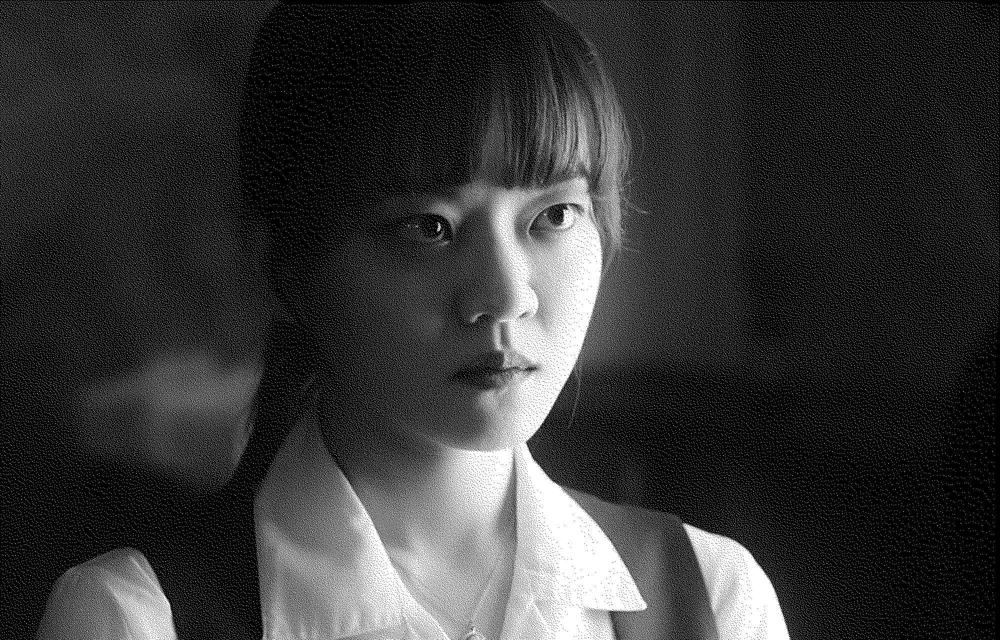

이자영
영웅
삼진그룹 영어토익반
SAMJIN COMPANY ENGLISH CLASS
2020년
감독 이종필
드라마
110분
이자영 역
고아성

이자영의 첫 번째 대사
마이 네임 이즈 자영. 자영 리, 마이 잉글리시 네임 이즈 도로시. 번데기 ‘시’. 아이엠…. 아이엠, 아이 라이크 애플.
00:01:34



이자영의 마지막 대사
생산 관리 3부 이자영 대리입니다. 네, 제가 낸 아이디어 맞고요, 세탁기에서 건조하는 거 말고 건조기만 따로.
01:45:54